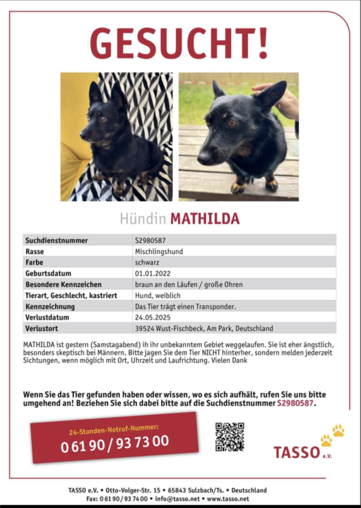

Schwarz mit braunen Beinen – sehr ängstlich
Mathilda ist am 24.05.2025 in 39524 Wust-Fischbeck (Am Park) entlaufen.
Standort auf Google Maps ansehen
Mathilda ist eine ängstliche ehemalige Straßenhündin und reagiert besonders empfindlich auf Männer.
Bitte NICHT verfolgen, nicht ansprechen oder versuchen einzufangen!
Bei Sichtung bitte sofort Zeit, Ort und Laufrichtung notieren und melden.
📞 TASSO Notruf: 06190 / 93 73 00 (Suchnummer: S2980587)
📞 Besitzerin Gabi: 0176 67878584
Mathilda ist nun seit über einer Woche verschwunden. Die Sichtungen nehmen ab, und jede Hilfe ist dringend notwendig. Wenn Sie irgendetwas sehen oder hören – bitte melden Sie sich. Jede Information zählt!
